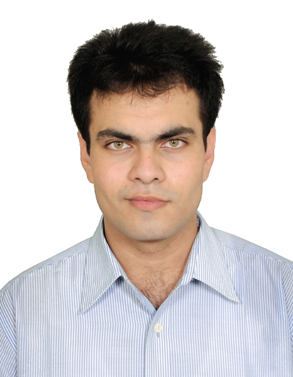

Education
- B.Tech. (Honours) in Aerospace Engineering from Indian Institute of Technology Kharagpur
- All India Rank 12 in GATE 2016
- Physics, Chemistry & Maths from Bytco College, Nasik Road
- Grade I to X at St. Xavier's, Nasik
Hi there! Welcome
to
my website. A little something about myself: I am an Aerospace
Engineer and have earned my Undergraduate Degree (B.Tech. Honours) from Indian Institute of Technology Kharagpur. I have always envisaged myself engaged in Engineering Operations as a part of an
organization which is coherent with my personal values of Excellence and Integrity. Desirous of such an occupation, I garnered competence in General Engineering and Management, Aircraft Design, Aerodynamics, Structures, Gas Turbine Engines,
Structures and Flight Controls during my college days.
After graduating, I wanted to dabble in Manufacturing Operations to enhance my Engineering versatility and Leadership skills. Subsequently, I joined Rolls-Royce in the capacity
of a Manufacturing Engineer where I contributed to the Process Planning of Turbine Discs commodity. I was deputed to Germany to gain a thorough understanding of relevant technology and to facilitate liaison between India and Germany. I was
handpicked for leading Capital Manufacturing Technology Projects and I proceeded to function as a Project Manager for deployment of the same. I have managed a portfolio of 3 Manufacturing Projects entailing stakeholder management, project
finances, schedules, business requirements, technology approval, operations, systems, supply chain, quality and executive reporting & communications. I presently am positioned as an Engineering Analyst with Infosys / Rolls-Royce
partnership where I drive BiQ and TQM initiatives for HP Turbine NGVs. I also offer a sound understanding of Business Strategies (Porter’s 5 Forces, 4P models, Industry Categorization etc.), Financial & Economic Terminologies and expertise in
Lean Manufacturing, TQM, PFMEA, Statistical Process Analysis, Problem Solving, GD&T & Web Development.